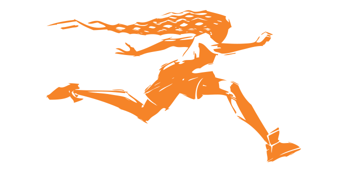

 The Bay Area Women's Sports Initiative (BAWSI) is a public benefit, nonprofit corpration with a mission to create programs and partnerships through which women athletes bring health, hope, and wholeness to out comunnity. Founded in 2005 by Olympic and World Cup soccor stars Brandi Chastian and Julie Foudy and Marlene Bjornsrud, former general manager of the San Jose CyberRays women's profressional soccer team. BAWSI provides a meaningful path for women athletes to become more visible and valued part of the Bay Area sports culture.
BAWSI's History
The concept od BAWSI was inspired by one of the most spectacular achievments in women's sports history and born out of one of it's biggest disappointments...